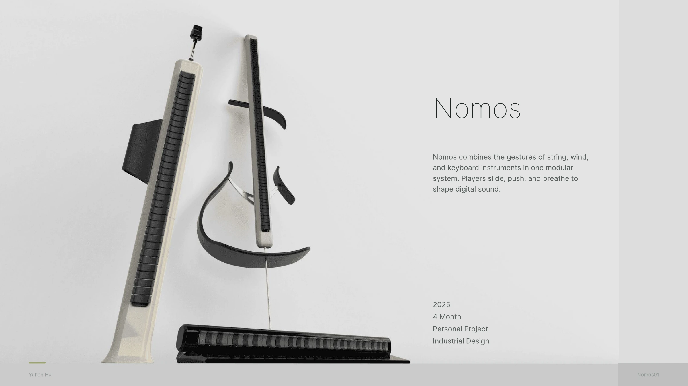
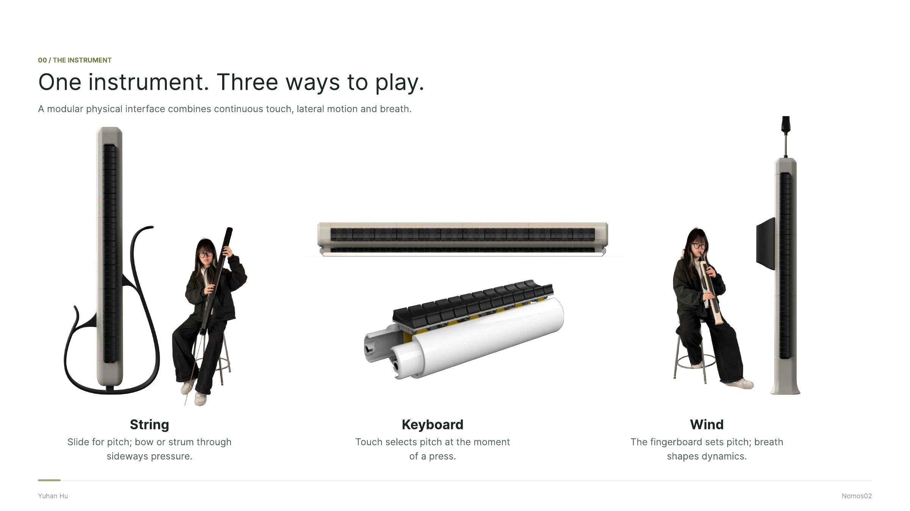
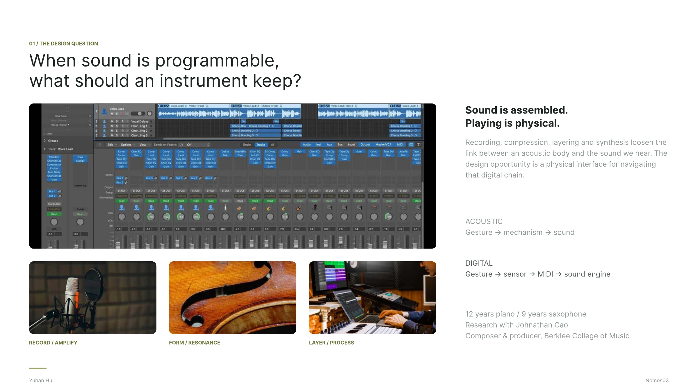
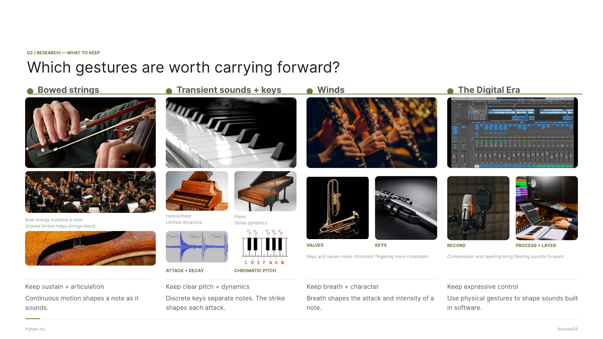
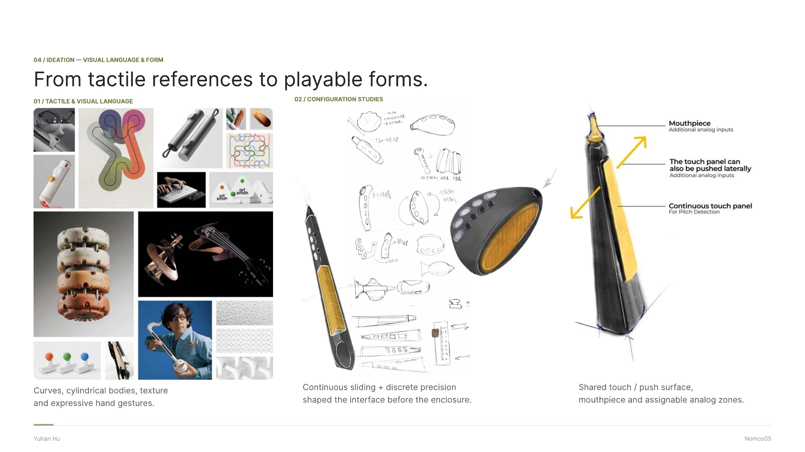
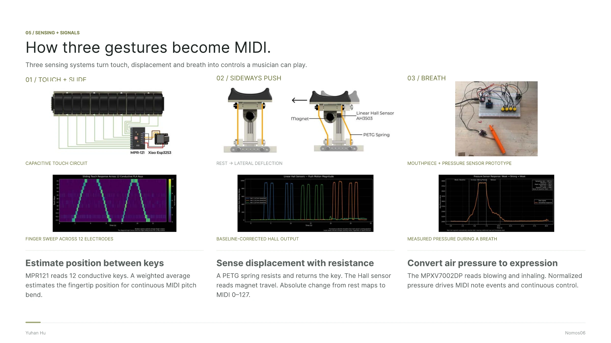
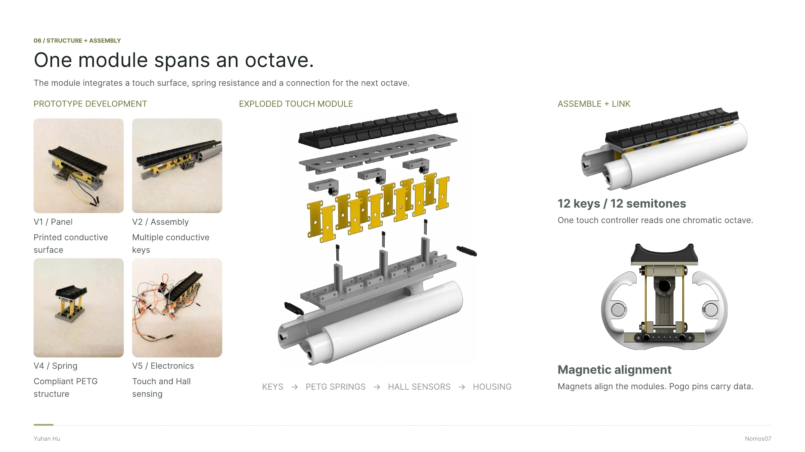
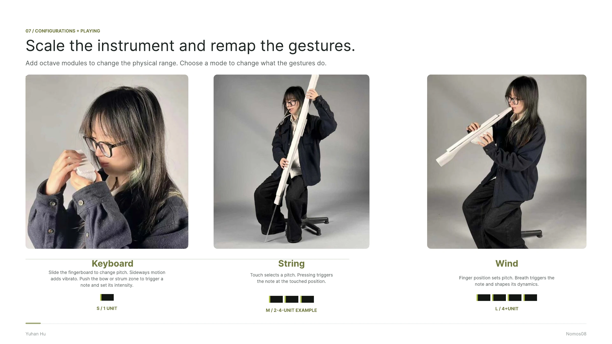
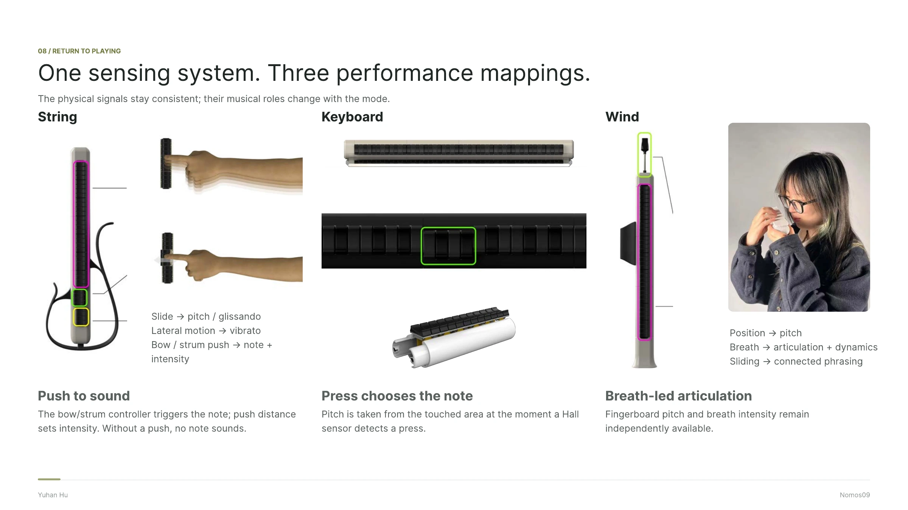
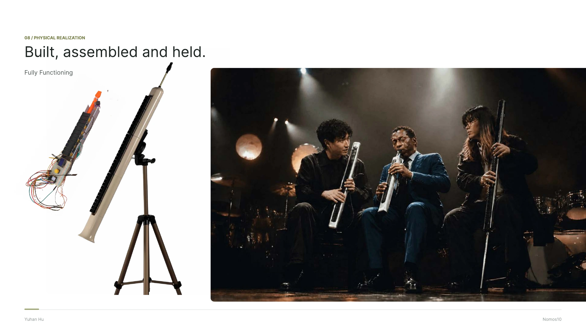

All work
Selected work / 01 · 2025
Nomos
Nomos combines playing gestures from string, wind, and keyboard instruments in a single modular system. I explored how physical controls can make digital sound feel expressive and intuitive.
View full process








